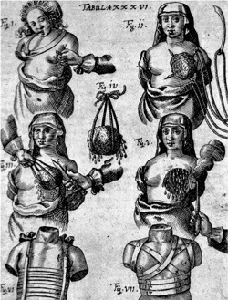

1. A new idea becomes possible: Remove the diseased tissue
When surgeons stopped accepting the claim that cancer was produced by invisible black bile, a different possibility opened. Perhaps a tumor was not merely the visible symptom of an untouchable body-wide imbalance. Perhaps it was abnormal tissue that could sometimes be removed. The shift did not guarantee a cure, because cancer could spread, but it made surgery a more rational possibility.
Matthew Baillie's studies of pathological anatomy helped make this change possible. By describing actual diseased organs rather than hypothetical fluids, he helped physicians imagine cancer as something located in tissue that could be examined and, sometimes, extracted.
Yet surgery was not ready to become a dependable treatment. The body was difficult to navigate, operations were brutally painful, and infection often killed patients afterward. The conceptual possibility of removing tumors had emerged before the technology needed to perform safe operations.
2. John Hunter distinguishes removable from invasive tumors
In eighteenth-century London, surgeon John Hunter experimented with removing tumors. He studied anatomy obsessively, practiced on animals and human remains, and tried to decide which growths could be removed without destroying essential structures around them.
Hunter made an important distinction between movable and immovable tumors. A movable lump could often be separated from nearby tissues; a fixed or immovable lump might already have invaded deeper structures. He considered the former more suitable for surgery and the latter much more difficult or impossible to remove safely.
This resembles an early, crude understanding of cancer staging. Today, doctors use examination, imaging, and pathological tests to assess how far a tumor has grown and whether it has spread. Hunter had none of those tools, but he understood that the extent of the disease matters.
For patients with advanced disease, Hunter offered a bleak recommendation described as “remote sympathy.” Rather than attempt a dangerous procedure that could not remove all the disease, the physician might have little to offer except care, concern, or relief of suffering.
3. Why early cancer surgery was so frightening
Imagine undergoing a major operation before reliable anesthesia. The patient might be given alcohol or opium and restrained while a surgeon worked as rapidly as possible. Speed mattered because every extra minute meant more pain, shock, and bleeding. The surgeon's anatomical skill could be exceptional and the procedure could still be intolerable.
Survival during the operation was not the end of the danger. Wounds could become infected afterward, producing fever, pus, gangrene, and death. Doctors did not yet understand the microorganisms causing these complications or how to prevent contamination systematically.
Thus, surgeons faced two enormous barriers: pain during surgery and infection after surgery. Mukherjee explains how nineteenth-century discoveries dramatically reduced both.

4. The public demonstration of anesthesia (1846)
On October 16, 1846, a group of physicians gathered at Massachusetts General Hospital in Boston. Dentist William Morton demonstrated the use of ether vapor to make a patient unconscious and less responsive to surgical pain. The patient, Edward Abbott, underwent a procedure on a neck swelling. When he awoke, he reported that he had not experienced the pain of the operation.
This event helped establish surgical anesthesia as a transformative medical technology. Surgeons were no longer forced to rush every procedure while a conscious patient struggled. They could attempt more careful and prolonged operations, including those involving complex internal organs.
The significance was larger than comfort alone. Time was suddenly available for precision. A surgeon could identify blood vessels and nerves, dissect tissue carefully, and perform operations that would previously have been nearly impossible for a patient to tolerate.
5. The remaining enemy: Infection
Even with anesthesia, surgery remained dangerous because wounds frequently became infected. An unconscious patient could survive a technically successful operation and die days later from contamination introduced during it.
In France, chemist Louis Pasteur had shown that microbial growth could explain why nutrient-rich broth became contaminated when exposed to microorganisms in the environment. His experiments suggested that spoilage and infection need not be mysterious spontaneous transformations.
A Scottish surgeon named Joseph Lister applied this reasoning to wounds. If microorganisms were responsible for the decay and infection seen after surgery, perhaps killing them could protect a patient.
6. Joseph Lister introduces antiseptic surgery
Lister noticed that dirty and open wounds were especially vulnerable to serious infection. Inspired by Pasteur's research, he began using carbolic acid (phenol), a substance already used in sanitation, to reduce contamination of injured tissue. The chapter recounts a young boy with a badly injured arm in 1867 whose wound was treated with carbolic-acid dressings. Despite early concerns, the injury eventually healed without the feared catastrophic infection.
Lister's methods represented an important early step toward antiseptic surgery—using chemical measures to reduce or destroy microorganisms associated with infection. The practical details of safe surgery have changed enormously since then; modern infection prevention uses carefully established sterile techniques rather than simply applying crude antiseptic pastes.
But the principle changed medicine. Anesthesia made prolonged surgery possible; antisepsis made survival afterward more likely. Together, they allowed cancer operations to expand dramatically.
7. Lister begins operating on cancer
Lister's work soon extended to malignant disease. In 1869, he performed surgery on a breast tumor affecting his sister, Isabella Pim, using ether and antiseptic methods. She survived the procedure without infection, although she later died after cancer spread to her liver.
Her story demonstrates the dual nature of the new techniques. Surgeons could now operate more safely, but a technically successful removal did not guarantee that cancer had been eliminated from the rest of the body. Making surgery safer and making cancer curable were related, but different problems.
8. Theodor Billroth explores the abdomen
The Viennese surgeon Theodor Billroth became a leading figure in the new age of surgery. He studied methods for opening the abdomen and removing tumors from organs such as the stomach, colon, and esophagus. These operations required extraordinary anatomical precision and the ability to reconnect structures after removing diseased tissue.
A cancer of the stomach might require removing a substantial part of the organ. But the digestive tract still needed to function. Billroth and his students developed ingenious methods of joining the remaining stomach to portions of intestine. In effect, they had to reconfigure anatomy to preserve life after extracting the cancer.
The chapter describes how these procedures expanded the surgeon's reach. Tumors once considered inaccessible could now be approached. By the end of the nineteenth century, some localized cancers could be removed with meaningful prospects of survival.

9. The crucial limitation: Surgery treats what it can reach
The excitement of the surgical age concealed an unresolved question. If a tumor appeared localized, doctors might remove it completely and see no disease afterward. But some patients later relapsed. Why? The original growth might have extended beyond what the surgeon removed, or malignant cells might already have spread elsewhere.
Surgery could become more technically advanced without solving metastasis. A sharper instrument or a longer operation could not reverse the fact that cancer was sometimes a systemic illness. This sets up the major debate in the next chapter: if an operation fails, should surgeons remove more tissue, or is there a point at which additional cutting does not improve survival?
10. The deeper meaning of Chapter 7
The story of Hunter shows that disease extent matters as much as surgical skill. The discoveries of Morton and Lister show how breakthroughs in one area can suddenly make a new approach feasible in another. Billroth's procedures show the imagination required to remove cancer while preserving basic bodily functions.
But the chapter also warns against confusing a successful operation with a successful cancer treatment. A patient can survive an operation and still relapse years later. A surgeon's ability to reach an organ does not mean that the entire disease is confined there.
Chapter takeaway: Anesthesia and antisepsis transformed cancer surgery from a desperate ordeal into a practical medical tool for some patients. Yet the possibility of cancer spreading beyond the surgeon's reach meant that more surgery was not automatically the answer.